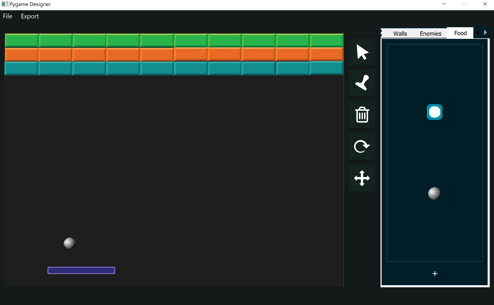

This chapter will focus on the creation of the Breakout layour using the rlpp_designer, the encoding of the agent's actions, and the encoding of the agent's state.
We begin our project with the creation of a layout for our game of Breakout. The game should have:
- paddle (agent)
- ball ("food")
- blocks (walls)

Our game will evaluate the following interactions:
- Paddle - Ball (small reward)
- Ball - Block (big reward)
- Ball - Screen (penalties)
[LEFT, NONE, RIGHT]
[
Ball is left,
Ball is right,
Ball is in the top half of the screen,
Ball is in the bottom half of the screen,
paddle is touching left edge,
paddle is touching right edge
]
Let's begin by exporting our layour using the second option "As AI agents". Then create and run a script that uses the rlpp.rl_processor to generate the base code for our game, called rl_output.py. You can change the file name if you wish.
The agent's actions and interactions
We begin the code by making the agent (paddle) move based on the action received by the play_step() method, located inside the Agent class:
def play_step(self,action,reward, isDead, penalty):
if action == [1,0,0] and self.rect.left - SPEED > 0:
self.x -= SPEED
elif action == [0,0,1] and self.rect.right + SPEED < SCREEN[0]:
self.x += SPEED
self.isDead = isDead
reward = reward
reward -= penalty
score = 0
return reward, self.isDead, score
This code snippet receives the direction where the agent wants to move, and if moving there keeps us within the boundaries of the screen, then it applies the change in x. Notice the vector with value [0,1,0] is not represented in the code because that action represents no movement. Notice also a new constant SPEED has been added somewhere else in the document (not shown but added at the top of the document), and is being used in the code to represent the changes in the position of x.
Next, we need to calculate whether the game is over and the reward. We need the following helper functions:
- collision_paddle_ball() - gives a big reward of +10
- collision_ball_blocks() - gives a smaller reward of +5
- distance_paddle_closest_ball() - gives a small reward from 0 up to +5
- collision_ball_edges() - gives a penalty from -20 to -10
Updating collisions
Because the collision events involve all elements in the game, some of which do not involve the agent at all (for example, collision of the ball with the screen or the blocks), we will create these methods as part of the Game Manager instead of the Agent class. Each of these events will modify a parameter that will be passed to the agent when we call agent.play_step().
def update(self):
[pygame.quit() for event in pygame.event.get() if event.type == pygame.QUIT]
for ball in self.foods:
ball.update_position()
for agent in self.agents:
if not agent.isDead:
reward = self.collision_paddle_ball(agent)
reward += self.collision_ball_blocks()
reward += self.distance_paddle_closest_ball(agent)
isGameOver, penalty = self.collision_ball_edges(agent)
# get numerical interpretation of environment
previous_env = agent.get_state()
# use model to predict a move
new_move = agent.get_action(previous_env)
# apply the move
reward, done, score = agent.play_step(new_move,reward, isGameOver,penalty)
# get new state from applied move
new_env = agent.get_state()
# train short memory
agent.train_short_memory(previous_env, new_move, reward, new_env, done)
# add results to memory
agent.remember(previous_env, new_move, reward, new_env, done)
# if the game is out of agents, then game is over. Reset the game and train long memory
agents_alive = sum([1 for agent in self.agents if not agent.isDead])
if agents_alive == 0:
for agent in self.agents:
agent.n_games += 1
agent.train_long_memory()
print(agent.n_games)
self.reset()
Notice we're calling these functions for each of the agents in our game, and passing the agent itself as an argument to the first method collision_paddle_ball. Even though our code only has one paddle, it is important that we get familiar to this architecture, as it allows for the integration of more agents if we want to add them later.
collision_paddle_ball()
We create a new method inside of GameManager.
def collision_paddle_ball(self,agent):
reward = 0
for ball in self.foods:
if ball.rect.colliderect(agent):
reward += 10 #20
ball.dy = -abs(ball.dy)
return reward
collision_ball_blocks ()
We create another method inside the GameManager class:
def collision_ball_blocks(self):
reward = 0
for wall in self.walls:
for ball in self.foods:
if wall.rect.colliderect(ball):
self.update_ball_vel(ball, wall)
self.walls.remove(wall)
reward += 5 #2
break
return reward
Our update_ball_vel() method looks as follows, and is also created inside of the GameManager class:
def update_ball_vel(self,ball, block):
overlap_left = ball.rect.center[0] - block.rect.left
overlap_right = block.rect.right - ball.rect.center[0]
overlap_up = ball.rect.center[1] - block.rect.top
overlap_bottom = block.rect.bottom - ball.rect.center[1]
edge_distance = min (overlap_right,overlap_bottom,overlap_left,overlap_up)
# RIGHT BOUNCE
if edge_distance == overlap_right:
ball.dx = abs(ball.dx)
# BOTTOM BOUNCE
if edge_distance == overlap_bottom:
ball.dy = abs(ball.dy)
# LEFT BOUNCE
if edge_distance == overlap_left:
ball.dx = -abs(ball.dx)
# UP BOUNCE
if edge_distance == overlap_up:
ball.dy = -abs(ball.dy)
The method update_ball_vel is a helper function that will help us determine in which direction the ball should bounce next, after getting in touch with a block. The function calculates the distance from the ball to each of the four edges of the block, picks the smaller distance and changes the direction of the ball accordingly.
distance_paddle_closest_ball()
This method will determine the distance between the paddle and the closes ball, in the x axis. This is important because we want to reward our agent every frame, providing a small reward based on how close the ball is relative to the paddle's center. This will hopefully have the effect of making the agent prioritize hitting the ball. We add a new method distance_paddle_closest_ball() to the GameManager class:
def distance_paddle_closest_ball(self, agent):
candidate = None
shortest_h = None
for ball in self.foods:
h = ((agent.x - ball.x)**2 + (agent.y - ball.y)**2)**0.5
if shortest_h is None or shortest_h > h:
shortest_h = h
candidate = ball
if candidate is not None:
# add a reward proportional to the overlapping between the x axis of the paddle and the candidate ball
scaled_distance_paddle_candidate = 1 - (abs(candidate.x - agent.x) / ((SCREEN[0] - agent.image.get_width() - candidate.image.get_width())//2))
reward_by_distance = 5 * scaled_distance_paddle_candidate
# print(reward_by_distance)
return reward_by_distance
return 0
The method distance_paddle_closest_ball works by finding the closest ball to the paddle (there could be more than one), and if there's at least one ball in the game, we calculate its distance relative to the paddle. We scale this distance so it goes from 0 to +1, and substract it from 1 (the maximum normalized value). This has the effect of giving a higher reward (up to 5) to shorter distances.
collision_ball_edges()
This method updates the velocity of the ball in the x and y axis based on the current position of the ball relative to the right, bottom, left, or up edges of the screen.
| Direction | Transformation |
|---|---|
| RIGHT | dx → -dx |
| BOTTOM | dy → -dx |
| LEFT | -dx → dx |
| UP | -dy → dy |
Moving the ball
At this stage, we are updating the velocities in x and y of our ball, using the variables dx and dy, but if we ran the game, we would notice the ball is not moving yet. To make the ball move, we need to modify the method update_position() from the Food class. Another issue is the original values that dnd dy have in our game. The rlpp library assigns a velocity to all Game Objects equal to 0.1, which is rather slow for our implementation. We apply the following changes:
class Food(GameObject):
def __init__(self, position, angle, object_type, img_path, scale_factor):
super().__init__(position, angle, "food", img_path, scale_factor)
self.dx = random.randint(1,MAX_BALL_DX) * random.choice([-1,1])
self.dy = MAX_BALL_DY
def update_position(self):
self.x += self.dx
self.y += self.dy
Up to this point, we've used a couple of constant parameters that we don't have yet, that include the velocity of the ball in the x axis, and its velocity in the y axis. We also need to update the velocity of the paddle. We add these parameters at the top of our document. In Python, it is tradition to declare constant parameters as a special type of variable, written in capital letters:
At this stage, we can put all the pieces together inside the update function of the GameManager class:
def update(self):
[pygame.quit() for event in pygame.event.get() if event.type == pygame.QUIT]
for ball in self.foods:
ball.update_position()
for agent in self.agents:
if not agent.isDead:
reward = self.collision_paddle_ball(agent)
reward += self.collision_ball_blocks()
reward += self.distance_paddle_closest_ball(agent)
isGameOver, penalty = self.collision_ball_edges(agent)
# get numerical interpretation of environment
previous_env = agent.get_state()
# use model to predict a move
new_move = agent.get_action(previous_env)
# apply the move
reward, done, score = agent.play_step(new_move,reward, isGameOver,penalty)
# get new state from applied move
new_env = agent.get_state()
# train short memory
agent.train_short_memory(previous_env, new_move, reward, new_env, done)
# add results to memory
agent.remember(previous_env, new_move, reward, new_env, done)
# if the game is out of agents, then game is over. Reset the game and train long memory
agents_alive = sum([1 for agent in self.agents if not agent.isDead])
if agents_alive == 0:
for agent in self.agents:
agent.n_games += 1
agent.train_long_memory()
print(agent.n_games)
self.reset()
The agent's state
The rules of the environment and the rewards and penalties associated with different events in the game are set, but the agent still can't learn because it has no idea of what is happening in its environment. We need to "give eyes" to our paddle. We will do this by creating a simple representation of such environment in the form of a list with a single element. This is known as the state of the agent's world.
# get a numerical interpretation of the agent's state in the world
def get_state(self, balls):
state = [0 for _ in range(WORLD_STATES)]
candidate = None
shortest_dist = None
for ball in balls:
h = ((ball.x - self.x)**2 + (ball.y - self.y)**2) ** 0.5
if shortest_dist is None or shortest_dist > h:
candidate = ball
shortest_dist = h
if candidate is not None:
scaled_distance_paddle_ball = (candidate.x - self.x) / SCREEN[0]
relative_distance_paddle_ball = math.tanh(scaled_distance_paddle_ball * 2)
state = [
relative_distance_paddle_ball,
]
return np.array(state, dtype=float)
The method get_state now receives a list of balls and uses it to find the closest ball to the paddle, which will be known as the agent. If there are any balls left in the game, we calculate the distance between the paddle and the candidate ball in the x axis, and scale it to go from 0 to 1. Finally, we use a tanh to normalize the values. This will have the effect of making the values go from -1 to +1, with zero when the paddle and the ball are at the same position in the x axis.
Modifying epsilon (randomness)...
At each frame in our network, the method get_action() uses a special parameter known as epsilon to determine if the action taken by the agent will be taken from the neural network or rather picked at random. This is a crucial component of Deep Q-Learning known as exploration vs. exploitation. At the early stages of training, we rely on lucky random guesses for the network to find the consequences of carrying actions. As the games go by, we gradually reduce the effect of randomness until all decisions are made by the agent, finishing the training.
Although this sounds simple in principle, it's one of the most crucial parts of your rl implementations. A quick reduction in epsilon and your network will fail to catch an optimal strategy. However, to much randomness carried over long periods of time may confuse the network, always keeping it away from coming up with a solid strategy. Our network right now suffers from the first issue. We are currently using a linear decay to reduce epsilon, affecting learning. We will incorporate a new formula:
def get_action(self, state):
# random moves: tradeoff exploration / exploitation
decay_rate = 0.998
self.epsilon = max(
0.05,
1.2 * (decay_rate ** self.n_games)
)
action_array = [0 for _ in range(ACTION_STATES)]
if random.uniform(0,1) < self.epsilon:
idx_ = random.randint(0, ACTION_STATES-1)
action_array[idx_] = 1
return action_array
else:
state0 = torch.tensor(state,dtype=torch.float)
prediction = self.model(state0)
actionIdx = int(torch.argmax(prediction).item())
action_array[actionIdx] = 1
return action_array
Ths is known as exponential decay. Now that we have all the components ready, we can proceed with the training of our network!